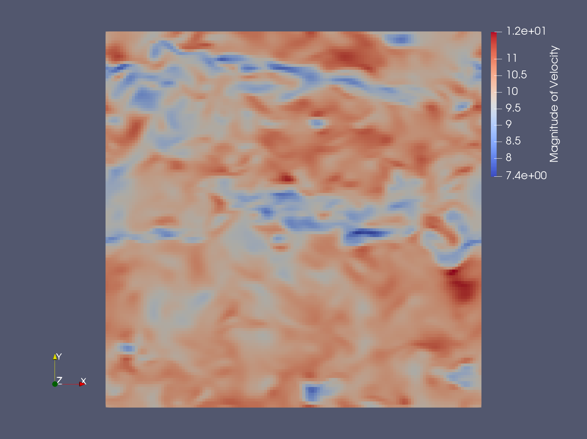

Precursor (ABL) walkthrough
With AMR-Wind compiled, we can run simulations. In this section, we will run two simulations of a weakly convective atmospheric boundary layer. The first simulation will be of a transient “spinup” phase, and the second simulation will serve as a “precursor” for a turbine simulation.
Before simulating anything, we first need to set up the input file. This
is a text file, and its filename traditionally ends with .inp. There are generally two approaches to
set one up: manually through a text editor, often beginning with an example file as a starting point,
or with the use of amr-wind-frontend. For larger
simulations, with many turbines and refinement zones, amr-wind-frontend is the ideal approach for
input-file setup. This tool shows the locations of the turbines and refinements, providing a great
sanity check for expensive simulations. For simpler simulations, with one or a handful of turbines,
the manual approach is typically sufficient when beginning from a valid starting point. If you do not
have an input file on hand to use as a template, input files from the regression tests directory
(“test/test_files/”) in the AMR-Wind repository can serve as examples. Please consult the
input file reference to understand and appropriately modify the available input arguments.
Spinup simulation
Here is the content of our spinup input file:
1#¨¨¨¨¨¨¨¨¨¨¨¨¨¨¨¨¨¨¨¨¨¨¨¨¨¨¨¨¨¨¨¨¨¨¨¨¨¨¨#
2# SIMULATION CONTROL #
3#.......................................#
4time.stop_time = 7200.0 # Max (simulated) time to evolve [s]
5time.max_step = -1 # Max number of time steps; -1 means termination set by timestamps
6time.fixed_dt = 0.5 # Use this constant dt if > 0
7time.cfl = 0.95 # CFL factor, will produce warnings if exceeded using fixed_dt
8
9time.plot_interval = 1800 # Steps between plot files
10time.checkpoint_interval = 1800 # Steps between checkpoint files
11
12incflo.physics = ABL
13turbulence.model = OneEqKsgsM84 # For neutral ABL, use "Smagorinsky"
14TKE.source_terms = KsgsM84Src
15incflo.gravity = 0. 0. -9.81 # Gravitational force (3D)
16incflo.density = 1.225 # Reference density; make sure this agrees with OpenFAST values
17transport.viscosity = 1.0e-5 # Dynamic viscosity [N-s/m^2]
18transport.laminar_prandtl = 0.7
19transport.turbulent_prandtl = 0.3333
20transport.reference_temperature = 290
21
22#¨¨¨¨¨¨¨¨¨¨¨¨¨¨¨¨¨¨¨¨¨¨¨¨¨¨¨¨¨¨¨¨¨¨¨¨¨¨¨#
23# GEOMETRY & BCs #
24#.......................................#
25geometry.prob_lo = 0. 0. 0. # Lo corner coordinates
26geometry.prob_hi = 2560. 2560. 1280. # Hi corner coordinates
27amr.n_cell = 128 128 64 # Grid cells at coarsest AMRlevel
28amr.max_level = 0 # Max AMR level in hierarchy
29geometry.is_periodic = 1 1 0 # Periodicity x y z (0/1)
30
31zlo.type = wall_model
32zhi.type = slip_wall
33zhi.temperature_type = fixed_gradient
34zhi.temperature = 0.003
35
36#¨¨¨¨¨¨¨¨¨¨¨¨¨¨¨¨¨¨¨¨¨¨¨¨¨¨¨¨¨¨¨¨¨¨¨¨¨¨¨#
37# PHYSICS #
38#.......................................#
39ICNS.source_terms = BoussinesqBuoyancy CoriolisForcing ABLForcing
40incflo.velocity = 10.0 0.0 0.0
41ABLForcing.abl_forcing_height = 86.5
42CoriolisForcing.latitude = 36.607322 # Southern Great Plains
43CoriolisForcing.north_vector = 0.0 1.0 0.0
44CoriolisForcing.east_vector = 1.0 0.0 0.0
45ABL.temperature_heights = 0.0 600.0 700.0 1700.0 # Make sure top height >= the domain height
46ABL.temperature_values = 290.0 290.0 298.0 301.0
47ABL.perturb_temperature = true
48ABL.cutoff_height = 50.0
49ABL.perturb_velocity = true
50ABL.perturb_ref_height = 50.0
51ABL.Uperiods = 4.0
52ABL.Vperiods = 4.0
53ABL.deltaU = 1.0
54ABL.deltaV = 1.0
55ABL.kappa = .40
56ABL.surface_roughness_z0 = 0.01 # [m]
57ABL.surface_temp_flux = 0.05 # Surface temperature flux [K-m/s]
58
59#¨¨¨¨¨¨¨¨¨¨¨¨¨¨¨¨¨¨¨¨¨¨¨¨¨¨¨¨¨¨¨¨¨¨¨¨¨¨¨#
60# POST-Processing #
61#.......................................#
62incflo.post_processing = sampling
63
64# --- Sampling parameters ---
65sampling.output_interval = 900
66sampling.fields = velocity temperature
67
68#---- sample defs ----
69sampling.labels = xy-domain xz-domain
70
71sampling.xy-domain.type = PlaneSampler
72sampling.xy-domain.num_points = 256 256
73sampling.xy-domain.origin = 0.0 0.0 86.5
74sampling.xy-domain.axis1 = 2550.0 0.0 0.0
75sampling.xy-domain.axis2 = 0.0 2550.0 0.0
76sampling.xy-domain.offset_vector = 0.0 0.0 1.0
77sampling.xy-domain.offsets = -63.45 0.0 63.45
78
79sampling.xz-domain.type = PlaneSampler
80sampling.xz-domain.num_points = 256 128
81sampling.xz-domain.origin = 0.0 1280.0 0.0
82sampling.xz-domain.axis1 = 2550.0 0.0 0.0
83sampling.xz-domain.axis2 = 0.0 0.0 1270.0
Further details about some input arguments
ABLForcing is the source term that pushes the flow field to a target
velocity. That target velocity is specified by incflo.velocity.
The ABLForcing vector term is proportional to the difference between
the target velocity and the xy-planar average velocity at the
abl_forcing_height. The ABLForcing term is applied uniformly to
the entire domain and is intended to mimic the atmospheric pressure
gradient in the context of a periodic domain.
BoussinesqBuoyancy implements the effect of buoyancy based on differences between the local temperature and a reference temperature. CoriolisForcing represents the effect of the rotation of the earth on the flow field.
Predominantly, the ABL arguments refer to details of the initial
conditions, which also allow for perturbations designed to trip the onset
of turbulence. However, the surface_ details and the kappa
value inform the wall model at the lower boundary.
We are going to run the spinup simulation for a duration of two hours. The spinup simulation features a fairly small domain with a coarse uniform grid resolution of 20 m and does not employ any grid refinement.
When running simulations on a cluster, please follow the etiquette expected on the machine, which is typically to use a scratch directory as the active directory during a simulation run. In that context, you will also need a submission script. Please consult the user manual of your cluster to design such a script properly.
Here are a few tips for submitting an AMR-Wind run. If you used a Spack environment to compile
AMR-Wind, it is easiest to reference the amr-wind executable by activating Spack, activating the environment, and then using
the command spack load amr-wind to have the correct executable available without needing to specify its full path. Finally,
the syntax of the AMR-Wind command looks like
amr_wind spinup.inp
which should follow after an srun or mpiexec command (or similar) in a submission script to take advantage of parallelization.
This particular simulation has about 1 million cells, which means that it is suited run with about 50-80 CPU ranks.
If the simulation completes, the last time step reported will be 14400 at time 7200 s, and the job directory will contain
checkpoint (chk*) and plotfile (plt*) directories, along with a post_processing/ directory. Once the spinup simulation is done,
it is helpful to sanity check that the flow field variables make sense. The plt##### files can be opened using Paraview or other
visualization software that is AMReX-compatible. Another quick test is to plot the evolution of horizontally averaged vertical profiles,
which are provided through the abl_statistics file within post_processing/.
As an example, here we use Paraview and display the magnitude of the velocity at the final time of the simulation.
{kind=link}
Precursor simulation
After sufficiently spinning up turbulence, the “precursor simulation” follows. In the context of wind turbine LES, a precursor is a simulation that is run without a turbine for the explicit purpose of generating inflow boundary conditions. For computational efficiency, spinup and precursor simulations are almost always run with periodic boundary conditions. This means wind that exits the outflow simulation is then recirculated back into the inflow, which is a fine assumption for a statistically homogeneous atmosphere. However, this is problematic when wind turbines are present—turbines generate wakes, and these should not recirculate back to upstream of the turbine. So we run wind turbine simulations with a prescribed “inflow boundary condition” (where the wind data comes from the precursor) and an “outflow boundary condition” (usually a pressure BC).
Here is the content of the precursor simulation.
1#¨¨¨¨¨¨¨¨¨¨¨¨¨¨¨¨¨¨¨¨¨¨¨¨¨¨¨¨¨¨¨¨¨¨¨¨¨¨¨#
2# SIMULATION CONTROL #
3#.......................................#
4time.stop_time = 7800.0 # Max (simulated) time to evolve [s]
5time.max_step = -1 # Max number of time steps; -1 means termination set by timestamps
6time.fixed_dt = 0.125 # Use this constant dt if > 0
7time.cfl = 0.95 # CFL factor
8
9time.plot_interval = 1200 # Steps between plot files
10time.checkpoint_interval = 1200 # Steps between checkpoint files
11ABL.bndry_file = bndry_file.native
12ABL.bndry_io_mode = 0 # 0 = write, 1 = read
13ABL.bndry_planes = xlo
14ABL.bndry_output_start_time = 7200.0
15ABL.bndry_var_names = velocity temperature tke
16
17incflo.physics = ABL
18io.restart_file = ../spinup/chk14400
19turbulence.model = OneEqKsgsM84 # For neutral ABL, use "Smagorinsky"
20TKE.source_terms = KsgsM84Src
21incflo.gravity = 0. 0. -9.81 # Gravitational force (3D)
22incflo.density = 1.225 # Reference density; make sure this agrees with OpenFAST values
23transport.viscosity = 1.0e-5 # Dynamic viscosity [N-s/m^2]
24transport.laminar_prandtl = 0.7
25transport.turbulent_prandtl = 0.3333
26transport.reference_temperature = 290
27
28#¨¨¨¨¨¨¨¨¨¨¨¨¨¨¨¨¨¨¨¨¨¨¨¨¨¨¨¨¨¨¨¨¨¨¨¨¨¨¨#
29# GEOMETRY & BCs #
30#.......................................#
31geometry.prob_lo = 0. 0. 0. # Lo corner coordinates
32geometry.prob_hi = 2560. 2560. 1280. # Hi corner coordinates
33amr.n_cell = 128 128 64 # Grid cells at coarsest AMRlevel
34amr.max_level = 0 # Max AMR level in hierarchy
35geometry.is_periodic = 1 1 0 # Periodicity x y z (0/1)
36
37zlo.type = wall_model
38zhi.type = slip_wall
39zhi.temperature_type = fixed_gradient
40zhi.temperature = 0.003
41
42#¨¨¨¨¨¨¨¨¨¨¨¨¨¨¨¨¨¨¨¨¨¨¨¨¨¨¨¨¨¨¨¨¨¨¨¨¨¨¨#
43# PHYSICS #
44#.......................................#
45ICNS.source_terms = BoussinesqBuoyancy CoriolisForcing ABLForcing
46incflo.velocity = 10.0 0.0 0.0
47ABLForcing.abl_forcing_height = 86.5
48ABLForcing.forcing_timetable_output_file = abl_forces.txt
49CoriolisForcing.latitude = 36.607322 # Southern Great Plains
50CoriolisForcing.north_vector = 0.0 1.0 0.0
51CoriolisForcing.east_vector = 1.0 0.0 0.0
52ABL.temperature_heights = 0.0 600.0 700.0 1700.0 # Make sure top height >= the domain height
53ABL.temperature_values = 290.0 290.0 298.0 301.0
54ABL.perturb_temperature = true
55ABL.cutoff_height = 50.0
56ABL.perturb_velocity = true
57ABL.perturb_ref_height = 50.0
58ABL.Uperiods = 4.0
59ABL.Vperiods = 4.0
60ABL.deltaU = 1.0
61ABL.deltaV = 1.0
62ABL.kappa = .40
63ABL.surface_roughness_z0 = 0.01 # [m]
64ABL.surface_temp_flux = 0.05 # Surface temperature flux [K-m/s]
65
66#¨¨¨¨¨¨¨¨¨¨¨¨¨¨¨¨¨¨¨¨¨¨¨¨¨¨¨¨¨¨¨¨¨¨¨¨¨¨¨#
67# POST-Processing #
68#.......................................#
69incflo.post_processing = sampling averaging
70
71# --- Sampling parameters ---
72sampling.output_interval = 96
73sampling.fields = velocity temperature
74
75#---- sample defs ----
76sampling.labels = xy-domain xz-domain
77
78sampling.xy-domain.type = PlaneSampler
79sampling.xy-domain.num_points = 256 256
80sampling.xy-domain.origin = 0.0 0.0 86.5
81sampling.xy-domain.axis1 = 2550.0 0.0 0.0
82sampling.xy-domain.axis2 = 0.0 2550.0 0.0
83sampling.xy-domain.offset_vector = 0.0 0.0 1.0
84sampling.xy-domain.offsets = -63.45 0.0 63.45
85
86sampling.xz-domain.type = PlaneSampler
87sampling.xz-domain.num_points = 256 128
88sampling.xz-domain.origin = 0.0 1280.0 0.0
89sampling.xz-domain.axis1 = 2550.0 0.0 0.0
90sampling.xz-domain.axis2 = 0.0 0.0 1270.0
91
92#¨¨¨¨¨¨¨¨¨¨¨¨¨¨¨¨¨¨¨¨¨¨¨¨¨¨¨¨¨¨¨¨¨¨¨¨¨¨¨#
93# AVERAGING #
94#.......................................#
95averaging.type = TimeAveraging
96averaging.labels = means stress
97
98averaging.averaging_window = 60.0
99averaging.averaging_start_time = 7200.0
100
101averaging.means.fields = velocity
102averaging.means.averaging_type = ReAveraging
103
104averaging.stress.fields = velocity
105averaging.stress.averaging_type = ReynoldsStress
- This file is almost identical to the spinup input file, except there are a few differences:
This simulation starts from the last timestep of the spinup simulation, using the
io.restart_filelineWe are now saving boundary condition data, using the
ABL.bndry*linesBecause the simulation after the precursor (inflow-outflow simulation with turbines) will have a much finer mesh, it will also require a smaller timestep, reduced by a factor of 4 to 0.125 seconds. Reducing the timestep in the precursor simulation as well (the
time.fixed_dtline) permits the boundary plane and body force data to have better temporal resolution. This modification is not required for the precursor, though; this workflow will still function fine with an unmodified precursor time step.For more detailed analysis in post-processing, the frequency of
sampling.output_frequencyis increased. This argument actually refers to the output interval, so a smaller number means files are written more often.
Go to the next step: Turbine simulation walkthrough